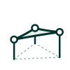
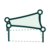
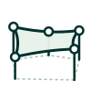
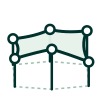
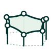
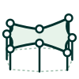

How many fixing points will your shade sail have?
Count the posts or wall points your sail will attach to.

3 Fixing Points
Any triangle
✓

4 Fixing Points
Most popular

5 Fixing Points
Heights recommended

6 Fixing Points
Heights required

7 Fixing Points
Heights required

8 Fixing Points
Heights required
Icon set
SVG files in icons/. Same line weight and fixing-point rings as the shape icons; irregular edges, posts at differing heights, dashed ground footprint.